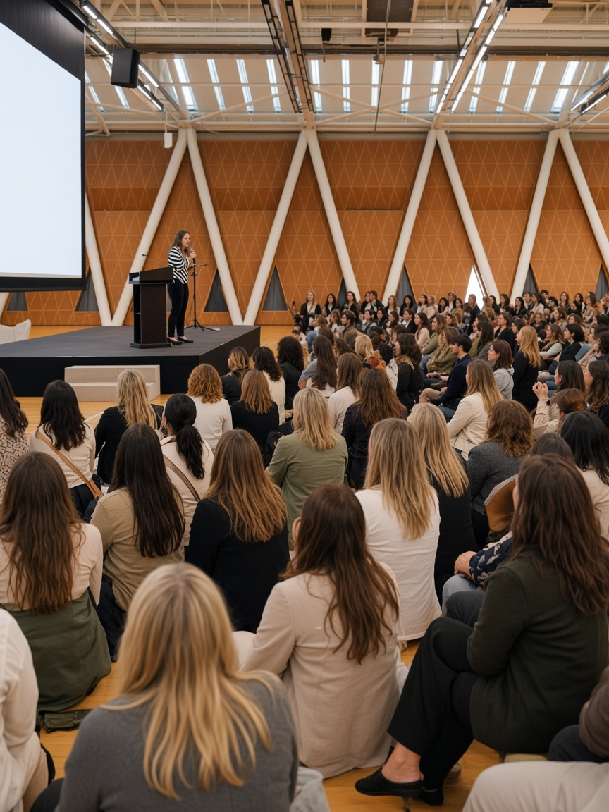
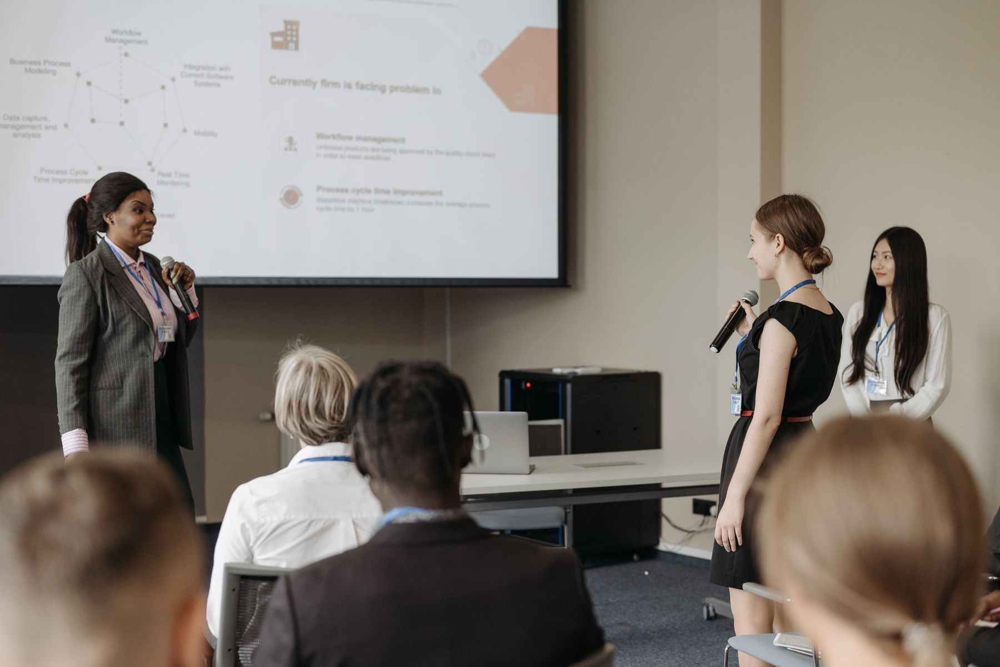
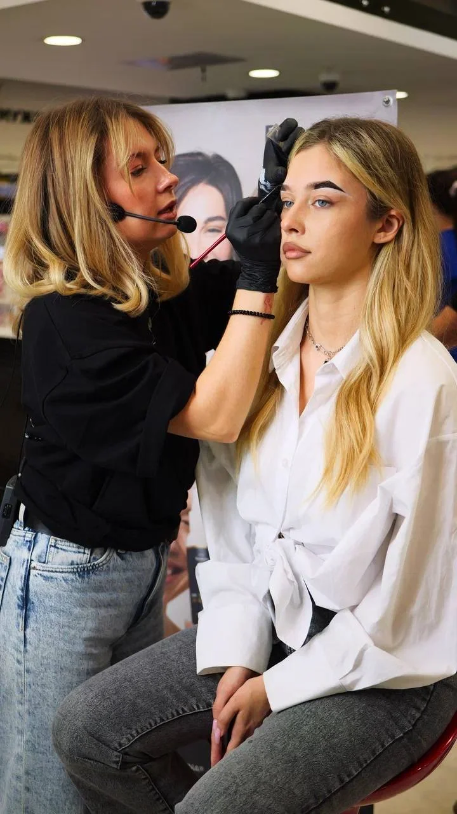
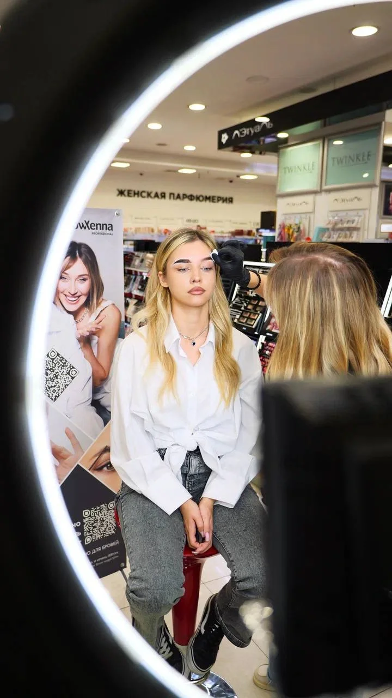
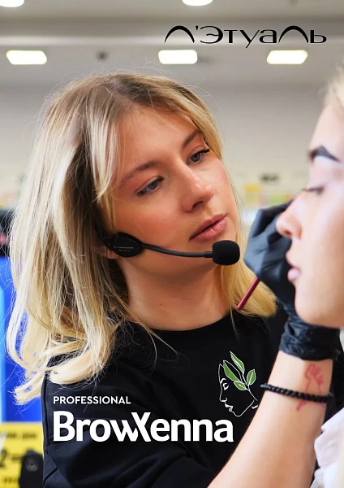
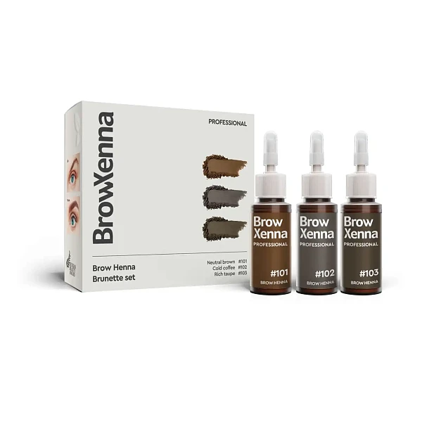
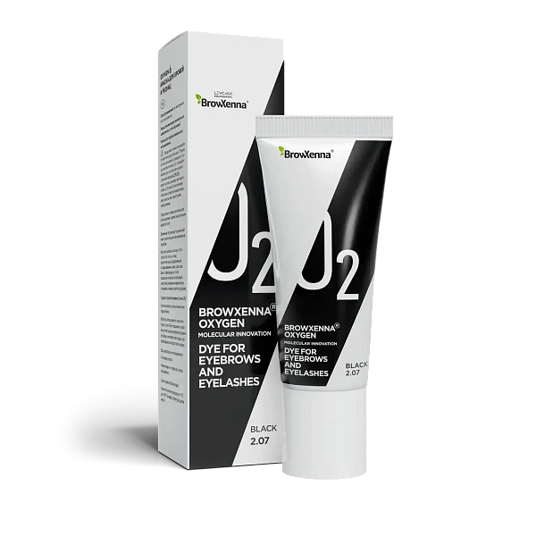

Artist
Strengthen your technique, solve difficult cases and build a more confident practice.
BrowXenna professional community
Learn with the brand, get support when you need it, grow your professional status and turn your expertise into new opportunities.
A place for professional growth
BrowXenna Pro brings different professional paths into one community without making everyone the same.
Strengthen your technique, solve difficult cases and build a more confident practice.
Turn trusted content and recommendations into professional opportunities.
Teach with stronger materials, reach new audiences and grow with an international brand.
Bring a clear product system, protocols and brand support into your student journey.
A community you can see
In real rooms, at live demonstrations, through questions, practice and the courage to share what you know.





“A strong professional should never have to grow alone.”


Not a shop window
Products are not separate cards or buttons here. They are the foundation of a professional system that connects knowledge, technique, client results and the artist’s growth.
Why another community?
There are already chats for formulas, products and feedback on work. What is missing is a trusted circle where professionals can honestly compare what helped them grow — and what did not.
Which advertising worked, which audience responded, what cost too much and what was worth repeating.
How trainers recruit students, sell a course, build repeat demand and avoid expensive launch mistakes.
Once you teach others, your circle becomes smaller. You need people with whom you can speak honestly without performing the role of the expert.
A conference gives ideas. A course gives knowledge. A community helps you test decisions, learn from others and move faster between events.
What is inside
Everything is connected: education helps you work better, support keeps you moving, and your contribution opens the next opportunity.
Protocols, product lessons, live sessions and practical analysis of common mistakes.
A professional space to ask questions, share a case and learn from the brand and peers.
Opportunities to appear in brand content, education, events and the verified professional directory.
Professional tools for your own audience and students, with clear rules after approval.
Professional path
You can enter as a learner or an established educator. The community gives every participant a clear next step.
Understand BrowXenna products, protocols and the standard behind a predictable professional result.
Use the knowledge in real work, develop your portfolio and become visible through quality.
Share useful professional content and help more artists discover the right way to work.
The strongest professionals can join courses, events, speaking, judging and local brand projects.
Professional opportunities
BrowXenna Pro connects education, recommendations and professional projects with measurable results.
Teach your groups and connect their product journey to your professional profile.
Approved participants receive tools that connect their audience with BrowXenna purchases.
Strong trainers and speakers can take part in paid education and brand projects.
A verified profile helps clients, students, schools and partners find the right professional.
How to join
We review every application because the community is built around real professional contribution, not an automatic badge.
Leave a short application with your country, role and professional profile.
The BrowXenna team confirms the right starting role and may ask for additional work examples.
After approval, you receive onboarding, access to the community and tools available for your role.
Questions
The essentials about participation, selection and professional opportunities.
Brow artists, lash and brow professionals, creators, trainers, speakers and schools from any country can apply. Beginners can also apply if they are entering the profession through education.
Not necessarily. Your starting point depends on your experience. Some roles require product knowledge and confirmed skills before professional tools become available.
Application does not require payment. Courses, events or role-specific professional programmes may have their own conditions, which are shown before you join them.
No. Trainer status is a separate professional role confirmed after education, proof of teaching ability and brand approval.
Depending on your approved role, opportunities may include your own student groups, recommendation tools, courses, speaking and brand projects. Exact conditions are shared in your professional account.
The community works together with the local BrowXenna partner. Education and professional activity create demand, while product purchases are directed through the authorised local route.
We review your profile, confirm the right starting point and contact you. After approval, you complete a short onboarding and receive access to the relevant community and tools.
Application
Tell us where you are now. We will review your profile and contact you with the right next step.
This is a prototype. In the live version, the BrowXenna team will review the profile and reply by email.